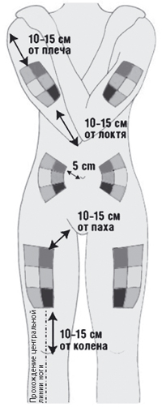
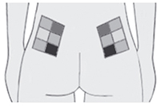
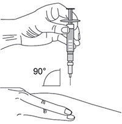
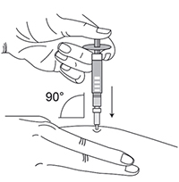

|
 |
| ИНТЕРФЕРОН БЕТА-1b (INTERFERON BETA-1b) interferon beta-1b раствор д/п/к введения | |||||||||||||||||||||||||||||||||||||||||||||||||||||||||||||||||||||||||||||||||||||||||||||||||||||||||||||||||||||||||||||||||||||||||||||||||||||||||||||||||||||||||||||||||||||||||||||||||||||||||||||||||||||||||||||||||||||||||||||||||||||||||||||||||||||||||||||||||||||||||||||||||||||||||||||||||||||||||||||||||||||||||||||||||||||||||||||||||||||||||||||||||||||||||||||||||||||||||||||||||||||||||||||||||||||||||||||||||||||||||||||||||||||||||||||||||||||||||||||||||||||||||||||||||||||||||||||||||||||||||||||||||||||||||||||||||||||||||||||||||||||||||||||||||||||||||||||||||||||||||||||||||||||||||||||||||||||||||||||||||||||||||||||||||||||||
|
Клинико-фармакологическая группа: Интерферон. Препарат, применяемый при рассеянном склерозе Номер и дата регистрации: ЛСР-007366/09 от 17.09.09 Код ATX: L03AB08 |
Владелец регистрационного удостоверения: зарегистрировано и произведено Представительство: | ||||||||||||||||||||||||||||||||||||||||||||||||||||||||||||||||||||||||||||||||||||||||||||||||||||||||||||||||||||||||||||||||||||||||||||||||||||||||||||||||||||||||||||||||||||||||||||||||||||||||||||||||||||||||||||||||||||||||||||||||||||||||||||||||||||||||||||||||||||||||||||||||||||||||||||||||||||||||||||||||||||||||||||||||||||||||||||||||||||||||||||||||||||||||||||||||||||||||||||||||||||||||||||||||||||||||||||||||||||||||||||||||||||||||||||||||||||||||||||||||||||||||||||||||||||||||||||||||||||||||||||||||||||||||||||||||||||||||||||||||||||||||||||||||||||||||||||||||||||||||||||||||||||||||||||||||||||||||||||||||||||||||||||||||||||||
Форма выпуска, состав и упаковка Раствор для п/к введения прозрачный, бесцветный или желтоватого оттенка.
Вспомогательные вещества: натрия ацетата тригидрат - 0.408 мг, уксусная кислота ледяная - до pH 4.0, декстран 50-70 тыс. - 15 мг, полисорбат 80 - 0.04 мг, маннитол - 50 мг, динатрия эдетата дигидрат - 0.0555 мг, вода д/и - до 1 мл. 1 мл - флаконы бесцветного стекла (5) - упаковки контурные пластиковые (1) - пачки картонные×. Раствор для п/к введения прозрачный, бесцветный или желтоватого оттенка.
Вспомогательные вещества: натрия ацетата тригидрат - 0.408 мг, уксусная кислота ледяная - до pH 4.0, декстран 50-70 тыс. - 15 мг, полисорбат 80 - 0.04 мг, маннитол - 50 мг, динатрия эдетата дигидрат - 0.0555 мг, вода д/и - до 1 мл. 0.5 мл - шприцы трехкомпонентные из бесцветного стекла (1) - упаковки ячейковые контурные (1) - пачки картонные××. × Пачка с флаконами дополнительно может комплектоваться: | |||||||||||||||||||||||||||||||||||||||||||||||||||||||||||||||||||||||||||||||||||||||||||||||||||||||||||||||||||||||||||||||||||||||||||||||||||||||||||||||||||||||||||||||||||||||||||||||||||||||||||||||||||||||||||||||||||||||||||||||||||||||||||||||||||||||||||||||||||||||||||||||||||||||||||||||||||||||||||||||||||||||||||||||||||||||||||||||||||||||||||||||||||||||||||||||||||||||||||||||||||||||||||||||||||||||||||||||||||||||||||||||||||||||||||||||||||||||||||||||||||||||||||||||||||||||||||||||||||||||||||||||||||||||||||||||||||||||||||||||||||||||||||||||||||||||||||||||||||||||||||||||||||||||||||||||||||||||||||||||||||||||||||||||||||||||
| |||||||||||||||||||||||||||||||||||||||||||||||||||||||||||||||||||||||||||||||||||||||||||||||||||||||||||||||||||||||||||||||||||||||||||||||||||||||||||||||||||||||||||||||||||||||||||||||||||||||||||||||||||||||||||||||||||||||||||||||||||||||||||||||||||||||||||||||||||||||||||||||||||||||||||||||||||||||||||||||||||||||||||||||||||||||||||||||||||||||||||||||||||||||||||||||||||||||||||||||||||||||||||||||||||||||||||||||||||||||||||||||||||||||||||||||||||||||||||||||||||||||||||||||||||||||||||||||||||||||||||||||||||||||||||||||||||||||||||||||||||||||||||||||||||||||||||||||||||||||||||||||||||||||||||||||||||||||||||||||||||||||||||||||||||||||
Описание препарата основано на официально утвержденной инструкции по применению и утверждено компанией-производителем для издания 2021 г. | |||||||||||||||||||||||||||||||||||||||||||||||||||||||||||||||||||||||||||||||||||||||||||||||||||||||||||||||||||||||||||||||||||||||||||||||||||||||||||||||||||||||||||||||||||||||||||||||||||||||||||||||||||||||||||||||||||||||||||||||||||||||||||||||||||||||||||||||||||||||||||||||||||||||||||||||||||||||||||||||||||||||||||||||||||||||||||||||||||||||||||||||||||||||||||||||||||||||||||||||||||||||||||||||||||||||||||||||||||||||||||||||||||||||||||||||||||||||||||||||||||||||||||||||||||||||||||||||||||||||||||||||||||||||||||||||||||||||||||||||||||||||||||||||||||||||||||||||||||||||||||||||||||||||||||||||||||||||||||||||||||||||||||||||||||||||
Фармакологическое действие |
Фармакокинетика |
Показания |
Режим дозирования |
Побочное действие |
Противопоказания |
Беременность и лактация |
Особые указания |
Передозировка |
Лекарственное взаимодействие |
Условия хранения и сроки годности |
Условия реализации
Фармакологическое действие
Рекомбинантный интерферон бета-1b выделяют из клеток Escherichia coli, в геном которых внедрен ген человеческого интерферона бета, кодирующий аминокислоту серин в 17-й позиции. Интерферон бета-1b представляет собой негликозилированный белок молекулярной массы 18500 дальтон, состоящий из 165 аминокислот. Фармакодинамика Интерфероны по своей структуре являются белками и принадлежат к семейству цитокинов. Молекулярная масса интерферонов находится в диапазоне от 15000 до 21000 дальтон. Выделяют три основных класса интерферонов: альфа, бета и гамма. Интерфероны альфа, бета и гамма имеют схожий механизм действия, однако различные биологические эффекты. Активность интерферонов видоспецифична, и, следовательно, изучить их эффекты возможно только на культурах клеток человека или in vivo на человеке. Интерферон бета-1b обладает противовирусной и иммуномодулирующей активностями. Механизм действия интерферона бета-1b при рассеянном склерозе до конца не установлен. Однако известно, что биологический эффект интерферона бета-1b опосредуется его взаимодействием со специфическими рецепторами, которые обнаружены на поверхности клеток человека. Связывание интерферона бета-1b с этими рецепторами индуцирует экспрессию ряда веществ, которые рассматриваются в качестве медиаторов биологических эффектов интерферона бета-1b. Содержание некоторых из этих веществ определяли в сыворотке и фракциях клеток крови больных, получавших интерферон бета-1b. Интерферон бета-1b снижает связывающую способность рецептора интерферона гамма и повышает его интернализацию и деградацию. Кроме того, интерферон бета-1b повышает супрессорную активность мононуклеарных клеток периферической крови. Не проводилось целенаправленных исследований с целью определения воздействия интерферона бета-1b на функцию сердечно-сосудистой системы, дыхательной и эндокринной систем. Результаты клинических исследований Ремиттирующий рассеянный склероз В рамках контролируемого клинического исследования пациентов с ремиттирующей формой рассеянного склероза, способных к самостоятельной ходьбе (EDSS от 0 до 5.5), получавших препарат интерферона бета-1b, получены данные, о том, что препарат снижает частоту обострений на 30%, уменьшает тяжесть обострений и число госпитализаций по причине основного заболевания. В дальнейшем были показаны увеличение интервала между обострениями и тенденция к замедлению прогрессирования ремиттирующего рассеянного склероза. Вторично-прогрессирующий рассеянный склероз Было проведено два контролируемых клинических исследования, включивших 1657 пациентов с вторично прогрессирующей формой рассеянного склероза. В исследованиях приняли участие пациенты с исходным значением EDSS от 3 до 6.5 баллов, т.е. пациенты были способны самостоятельно ходить. При оценке главной конечной точки исследования "время до подтвержденной прогрессии", т.е. способности замедлять прогрессирование заболевания в исследованиях, были получены противоречивые данные. Одно из двух исследований показало статистически значимое замедление скорости прогрессирования инвалидизации (отношение рисков = 0.69 при 95% доверительном интервале (0.55, 0.86), р=0.0010, снижение рисков составило 31% в группе терапии интерфероном бега-1b) и увеличение времени до момента утраты возможности передвигаться самостоятельно, т.е. использования инвалидного кресла или EDSS 7.0 (отношение рисков = 0.61 при 95% доверительном интервале (0.44, 0.85), р=0.0036, снижение рисков составило 39% в группе терапии интерфероном бета-1b) среди пациентов, принимавших интерферон бета-1b. Терапевтический эффект препарата сохранялся и в последующем периоде наблюдения вне зависимости от частоты обострений. Во втором исследовании препарата интерферона бета-1b у пациентов с вторично прогрессирующей формой рассеянного склероза не показано замедления скорости прогрессирования. Однако пациенты, включенные в это исследование, имели меньшую активность заболевания, нежели пациенты в других исследованиях при вторично-прогрессирующем течении рассеянного склероза. При проведении ретроспективного мета-анализа данных обоих исследований показан статистически значимый эффект (р=0.0076, при сравнении групп пациентов, получавших интерферон бета-1b 8 млн. ME, и группы плацебо). Ретроспективный анализ по субгруппам показал, что влияние на скорость прогрессирования более выражено в группе пациентов с высокой активностью заболевания до начала терапии (отношение рисков = 0.72 при 95% доверительном интервале (0.59, 0.88), р=0.0011, снижение рисков составило 28% в группе пациентов с обострениями или быстрой прогрессией EDSS, получавших интерферон бета-1b, в сравнении с группой плацебо). По результатам проведенного анализа можно заключить, что анализ частоты рецидивов и быстрой прогрессии EDSS (EDSS >1 балла или >0.5 при базовой EDSS ≥6 баллов за предшествующие терапии 2 года) может способствовать выявлению пациентов с активным течением заболевания. В данных исследованиях было также показано снижение частоты обострений (30%). Не было показано, что интерферон бета-1b оказывает влияние на продолжительность обострений. Клинически изолированный синдром Одно контролируемое клиническое исследование интерферона бета-1b провели у пациентов с клинически изолированным синдромом (КИС). КИС предполагает наличие единственного клинического эпизода демиелинизации и/или, по крайней мере, двух клинически не проявляющих себя очагов на Т2-взвешенных изображениях МРТ, которых недостаточно для постановки диагноза клинически достоверного рассеянного склероза. Установлено, что КИС с большой вероятностью в дальнейшем приводит к развитию рассеянного склероза. В исследование включались пациенты с одним клиническим очагом или двумя и более очагами на МРТ, при условии, что все альтернативные заболевания, которые могли бы служить наиболее вероятной причиной имеющихся симптомов, кроме рассеянного склероза, были исключены. Это исследование состояло из 2 фаз, плацебо-контролируемой фазы и фазы последующего наблюдения. Плацебо-контролируемая фаза имела продолжительность 2 года или до момента перехода пациента в клинически достоверный рассеянный склероз (КДРС). После завершения плацебо-контролируемой фазы пациент переводился в фазу последующего наблюдения на фоне терапии интерфероном бета-1b. С целью оценки раннего и отсроченного эффекта назначения интерферона бета-1b сравнивались группы пациентов, первоначально рандомизированных на интерферон бета-1b (группа немедленного лечения) и плацебо (группа отсроченного лечения). В ходе исследования пациенты и исследователи оставались заслеплены относительно распределения пациентов в группы терапии. Таблица 1. Эффективность интерферона бета-1b в рамках клинических исследований BENEFIT и продленного наблюдения пациентов исследования BENEFIT
В плацебо-контролируемой фазе исследования интерферон бета-1b статистически достоверно предотвращал переход КИС в КДРС. В группе пациентов, получавших интерферон бета-1b, показана задержка трансформации в достоверный рассеянный склероз по критериям МакДональда (см. таблицу 1). Анализ подгрупп в зависимости от исходных факторов продемонстрировал эффективность интерферона бета-1b в отношении предотвращения трансформации в КДРС во всех подгруппах. Риск трансформации в КДРС в течение 2 лет был выше в группе пациентов с монофокальным КИС с 9 и более очагами на Т2-взвешенных изображениях или с наличием очагов, накапливающих контраст, по данным МРТ в начале исследования. Эффективность интерферона бета-1b в группе пациентов с мультифокальными клиническими проявлениями не зависела от исходных показателей МРТ, что свидетельствует о высоком риске трансформации КИС в КДРС у пациентов данной группы. В настоящее время нет общепринятого определения высокого риска, однако к группе высокого риска развития КДРС можно отнести пациентов с моноочаговым КИС (клиническим проявлением 1 очага в ЦНС) и, по крайней мере, 9 очагами на МРТ в Т2-режиме и/или накапливающим контрастное вещество. Пациенты с многоочаговым КИС (клиническими проявлениями >1 очага в ЦНС) относятся к группе высокого риска развития КДРС независимо от количества очагов на МРТ. В любом случае, решение о назначении интерферона бета-1b должно быть принято, исходя из заключения о высоком риске развития КДРС у пациента. Терапия с интерфероном бета-1b хорошо переносилась пациентами, на что указывает низкий процент выбывших пациентов (93% завершили исследование). Для улучшения переносимости проводилось титрование дозы интерферона бета-1b, применялись НПВП в начале терапии. Кроме того, применялся автоинжектор у большинства пациентов на протяжении всего исследования. В дальнейшем интерферон бета-1b сохранял высокую эффективность по способности предотвращать развитие КДРС после 3 и 5 лет наблюдения (табл.1), несмотря на то, что большинство пациентов, получавших плацебо, начали терапию интерфероном бета-1b через 2 года после начала исследования. Подтвержденная прогрессия EDSS (увеличение EDSS, по крайней мере, на одном визите в сравнении с исходным значением) была ниже в группе немедленного лечения (табл.1, значительный эффект выявлен на 3-м году терапии, но на 5-м эффект отсутствует). У большинства пациентов в обеих группах не было прогрессирования инвалидности за 5-летний период. Не получено убедительных доказательств в пользу влияния на данный исход немедленного назначения интерферона бета-1b. Не показано влияния немедленного лечения интерфероном бета-1b на качество жизни пациентов. Ремиттирующий, вторично-прогрессирующий рассеянный склероз и клинически изолированный синдром Эффективность интерферона бета-1b показана во всех клинических исследованиях по способности уменьшать активность заболевания (острое воспаление в ЦНС и стойкое повреждение ткани), оцененную по показателям МРТ. Соотношение клинической активности рассеянного склероза и активности заболевания по МРТ-показателям в настоящее время до конца не установлено. Фармакокинетика
После п/к введения интерферона бета-1b в рекомендуемой дозе 8 млн. ME его сывороточные концентрации низкие или вообще не определяются. В связи с этим, сведений о фармакокинетике препарата у больных рассеянным склерозом, получающих интерферон бета-1b в рекомендуемой дозе, нет. После п/к введения 16 млн. ME интерферона бета-1b максимальные уровни в плазме составляют около 40 МЕ/мл через 1-8 ч после инъекции. По результатам многочисленных клинических исследований клиренс интерферона бета-1b и T1/2 препарата из сыворотки составляет в среднем 30 мл/мин/кг и 5 ч соответственно. Абсолютная биодоступность интерферона бета-1b при п/к введении равняется примерно 50%. Введение интерферона бета-1b через день не приводит к повышению уровня препарата в плазме крови, а его фармакокинетика в течение курса терапии, по-видимому, не меняется. При п/к применении интерферона бета-1b в дозе 0.25 мг через день уровни маркеров биологического ответа (неоптерин, бета2-микроглобулин и иммуносупрессивный цитокин интерлейкин-10) значительно повышались по сравнению с исходными показателями через 6-12 ч после введения первой дозы препарата, достигали пика через 40-124 ч и оставались повышенными на протяжении 7-дневного (168 ч) периода исследования. Связь между уровнями в плазме интерферона бета-1b или уровнями индуцированных им маркеров и механизмом действия интерферона бета-1b при рассеянном склерозе не установлена. Показания
* Общепринятого определения высокого риска нет. По данным исследования к группе высокого риска развития КДРС относятся пациенты с моноочаговым КИС (клиническими проявлениями 1 очага в ЦНС) и ≥Т2-очагами на МРТ и/или накапливающим контрастное вещество очагами. Пациенты с многоочаговым КИС (клиническими проявлениями >1 очага в ЦНС) относятся к группе высокого риска развития КДРС независимо от количества очагов на МРТ. Режим дозирования
Лечение препаратом интерферона бета-1b следует начинать под наблюдением врача, имеющего опыт лечения рассеянного склероза. Взрослые Рекомендуемую дозу интерферона бета-1b 8 млн. MЕ вводят п/к через день. Дети Не проводилось формальных клинических и фармакокинетических исследований в детской и подростковой популяции. Ограниченные опубликованные данные свидетельствует о сопоставимом профиле безопасности препарата интерферона бета-1b в дозе 8 млн. MЕ п/к через день в группе пациентов от 12 до 16 лет, в сравнении с взрослой популяцией. Отсутствует информация о применении препарата интерферона бета-1b у лиц младше 12 лет, препарат не может применяться в указанной группе пациентов. В начале лечения обычно рекомендуется провести титрование дозы. Лечение следует начинать с введения 2 млн. ME п/к через день, постепенно увеличивая дозу до 8 млн. ME, вводимую также через день. Период титрования дозы может варьировать в зависимости от индивидуальной переносимости препарата. Таблица 2. Схема титрования дозы*
* Период титрования может быть увеличен при развитии нежелательных реакций. Длительность лечения в настоящее время не установлена. Имеются результаты клинических исследований, в которых длительность лечения у больных ремиттирующим и вторично-прогрессирующим рассеянным склерозом достигала 5 и 3 лет соответственно. В группе пациентов с рецидивирующим течением рассеянного склероза высокая эффективность показана в течение первых 2 лет. Дальнейшее трехлетнее наблюдение показало сохранение показателей эффективности в течение всего периода лечения. У пациентов с клинически изолированным синдромом наблюдалась значительная задержка трансформации в достоверный рассеянный склероз на протяжении более чем 5 лет. Терапия интерфероном бета-1b не показана пациентам с рецидивирующе-ремиттирующей формой рассеянного склероза, у которых за прошедшие 2 года произошло менее 2 обострений, или пациентам с вторично-прогрессирующим рассеянным склерозом, у которых в течение прошедших 2 лет не выявлено прогрессии. Пациентам, у которых не наблюдается стабилизации течения заболевания (например, стойкое прогрессирование заболевания по шкале EDSS в течение 6 месяцев или необходимость проведения 3 и более курсов терапии кортикотропином или ГКС) в течение 1 года, лечение препаратом интерферона бета-1b рекомендуется прекратить. Рекомендации по применению для пациентов 1. Выбрать удобное время проведения инъекции. Инъекции желательно делать вечером перед сном. 2. Перед введением препарата тщательно вымыть руки водой с мылом. 3. Взять одну контурную ячейковую упаковку с заполненным шприцем/флаконом из картонной пачки, которая должна храниться в холодильнике, и выдержать ее при комнатной температуре в течение нескольких минут для того, чтобы температура препарата сравнялась с температурой окружающего воздуха. В случае появления конденсата на поверхности шприца/флакона следует подождать еще несколько минут до тех пор, пока конденсат не испарится. 4. Перед использованием следует осмотреть раствор в шприце/флаконе. При наличии взвешенных частиц или изменении цвета раствора, или повреждении шприца/флакона препарат не следует применять. Если появилась пена, что бывает, когда шприц/флакон встряхивают или сильно покачивают, следует подождать, пока осядет пена. 5. Выбрать область тела для инъекции. Интерферон бета-1b вводится в подкожную жировую клетчатку (жировой слой между кожей и мышечной тканью), поэтому следует выбирать места с рыхлой клетчаткой вдали от мест растяжения кожи, нервов, суставов и сосудов:
Рис. 1. Схема расположения мест инъекций.  Рис. 2. Схема расположения мест инъекций в ягодичную область.  Не следует использовать для инъекции болезненные точки, обесцвеченные, покрасневшие участки кожи или области с уплотнениями и узелками. Каждый раз следует выбирать новое место для укола, так можно уменьшить неприятные ощущения и боль на участке кожи в месте инъекции. Внутри каждой инъекционной области есть много точек для укола. Следует постоянно менять точки инъекций внутри конкретной области. 6. Подготовка к инъекции. Если пациент применяет препарат интерферона бета-1b в шприцах Взять подготовленный шприц в рабочую руку. Снять защитный колпачок с иглы. Если пациент применяет препарат интерферона бета-1b во флаконах Взять флакон с препаратом интерферона бета-1b и осторожно поставить флакон на ровную поверхность (стол). Пинцетом (или другим удобным приспособлением) снять крышку флакона. Продезинфицировать верхнюю часть флакона. Взять стерильный шприц в рабочую руку, снять защитный колпачок с иглы и, не нарушая стерильность, осторожно ввести иглу через резиновый колпачок флакона так, чтобы конец иглы (3-4 мм) был виден через стекло флакона. Перевернуть флакон, чтобы его горлышко было направлено вниз. 7. Количество раствора препарата интерферон бета-1b, которое нужно ввести при проведении инъекции, зависит от рекомендованной врачом дозы. Не следует хранить излишки препарата, оставшиеся в шприце/флаконе, для повторного использования. Если пациент применяет препарат интерферон бета-1b в шприцах В зависимости от дозы, которую прописал врач, может потребоваться удалить лишний объем раствора препарата из шприца. В случае такой необходимости следует медленно и аккуратно нажимать на поршень шприца для удаления лишнего количества раствора. Необходимо давить на поршень до тех пор, пока поршень не дойдет до необходимой метки на этикетке шприца. Если пациент применяет препарат интерферон бета-1b во флаконах Медленно оттянуть поршень назад и набрать в шприц из флакона необходимый объем раствора, соответствующий дозе препарата интерферон бета-1b, которую прописал врач. Затем, не нарушая стерильность, удалить флакон с иглы, придерживая иглу у основания (необходимо следить, чтобы игла не соскочила со шприца). Перевернув шприц вверх иглой, и, двигая поршень, удалить пузырьки воздуха осторожным постукиванием по шприцу и надавливанием на поршень. Заменить иглу на шприце и снять с нее колпачок. 8. Предварительно продезинфицировать участок кожи, куда будет введен препарат интерферон бета-1b. Когда кожа обсохнет, слегка собрать кожу в складку большим и указательным пальцами (рис. 3). 9. Располагая шприц перпендикулярно месту инъекции, ввести иглу в кожу под углом 90° (рис. 4). Рекомендуемая глубина введения иглы составляет 6 мм от поверхности кожи. Глубина подбирается в зависимости от типа телосложения и толщины подкожной жировой клетчатки. Препарат следует вводить, равномерно нажимая на поршень шприца вниз до конца (до его полного опустошения). Рис. 3  Рис. 4  10. Удалить шприц с иглой движением вертикально вверх. 11. Использованные шприцы/флаконы следует выбрасывать только в специально отведенное место, недоступное для детей. 12. Если пациент забыл ввести препарат интерферон бета-1b, необходимо сделать инъекцию немедленно, как только он вспомнит об этом. Следующую инъекцию производят через 48 ч. Не допускается вводить двойную дозу препарата. Не следует прекращать применение препарата интерферон бета-1b без консультации с врачом. Побочное действие
Нежелательные реакции часто возникают на начальных этапах лечения, однако в ходе последующего лечения их частота и интенсивность уменьшаются. Наиболее частыми реакциями являются гриппоподобный симптомокомплекс (лихорадка, озноб, боль в суставах, недомогание, потливость, головная боль или боль в мышцах) и реакции в месте введения, которые во многом обусловлены фармакологическими свойствами интерферона бета-1b. Реакции в месте введения часто встречаются после применения интерферона бета-1b: покраснение, отек, деколорация, воспаление, боль, гиперчувствительность, некроз, неспецифические реакции. Для улучшения переносимости рекомендуется начинать терапию интерфероном бета-1b с титрования (см. схему титрования дозы в разделе "Режим дозирования"), гриппоподобный синдром так же может быть скорректирован назначением НПВП. Распространенность реакций в месте введения может быть снижена при применении автоинжектора. Ниже представлены перечни нежелательных явлений, выявленных в рамках клинических исследований (табл. 3) и по данным пострегистрационного применения интерферона бета-1b (табл. 4). Таблица 3. Нежелательные явления и отклонения лабораторных показателей с частотой возникновения ≥10% в сравнении частотой соответствующего явления на плацебо; значимые побочные эффекты, связанные с препаратом <10%
1 Отклонение лабораторного показателя. Таблица 4. Неблагоприятные реакции, выявленные в процессе пострегистрационных наблюдений, и для которых частота встречаемости установлена (определены на основе объединенных данных клинических исследований (N=1093)) Частота встречаемости определена как: очень часто (≥1/10), часто (от ≥1/100 до <1/10), нечасто (от ≥1/1000 до <1/100), редко (от ≥1/10000 до <1/1000). Для HP, выявленных в процессе пострегистрационных наблюдений, и для которых частота встречаемости не установлена, указано "частота неизвестна". Внутри каждой группы, сформированной по частоте встречаемости, симптомы представлены в порядке уменьшения серьезности.
* Данные ЗАО Биокад. Противопоказания
С осторожностью Пациентам, в анамнезе которых имеется указание на депрессию или судороги, а также пациентам, получающим противосудорожные средства, интерферон бета-1b следует применять с осторожностью. Препарат следует применять с осторожностью у пациентов с сердечной недостаточностью III-IV стадии по классификации NYHA и у больных с кардиомиопатией. Необходимо соблюдать осторожность при лечении препаратом интерферон бета-1b больных с нарушениями функции костного мозга, анемией, тромбоцитопенией или лейкопенией, моноклональной гаммапатией, тяжелой почечной недостаточностью. Применение при беременности и кормлении грудью
Неизвестно, способен ли интерферон бета-1b вызывать повреждения плода при лечении беременных женщин или влиять на репродуктивную функцию человека. В контролируемых клинических исследованиях у больных рассеянным склерозом отмечались случаи самопроизвольного аборта. В исследованиях у макак-резус человеческий интерферон бета-1b оказывал эмбриотоксическое действие и в более высоких дозах вызывал увеличение частоты абортов. Следовательно, интерферон бета-1b противопоказан во время беременности. Женщинам репродуктивного возраста при лечении этим препаратом следует пользоваться адекватными методами контрацепции. В случае наступления беременности во время лечения интерфероном бета-1b или планировании беременности, женщину следует информировать о потенциальном риске и рекомендовать прекращение лечения. У пациенток с высокой частотой рецидивов в анамнезе до начала лечения необходимо тщательно оценить риск развития серьезного рецидива после прекращения лечения препаратом при наступлении беременности против возможного повышенного риска развития спонтанного аборта. Неизвестно, экскретируется ли интерферон бета-1b с грудным молоком. Учитывая потенциальную возможность развития серьезных нежелательных реакций на интерферон бета-1b у младенцев, находящихся на грудном вскармливании, необходимо прекратить кормление грудью или отменить препарат. Особые указания
Патология иммунной системы Применение цитокинов у больных с моноклональной гаммапатией иногда сопровождалось развитием синдрома системного повышения проницаемости капилляров с шокоподобными симптомами и летальным исходом. Патология ЖКТ В редких случаях на фоне применения препарата интерферона бета-1b наблюдалось развитие панкреатита, в большинстве случаев связанного с наличием гипертриглицеридемии. Поражение нервной системы Больных необходимо информировать о том, что побочным эффектом препарата интерферона бета-1b могут быть депрессия и суицидальные мысли, при появлении которых следует немедленно обратиться к врачу. В двух контролируемых клинических исследованиях с участием 1657 пациентов с вторично-прогрессирующим рассеянным склерозом не было выявлено достоверных различий частоты развития депрессии и суицидальных мыслей при применении интерферона бета-1b или плацебо. Тем не менее, следует проявлять осторожность при назначении препарата интерферона бета-1b больным с депрессивными расстройствами и суицидальными мыслями в анамнезе. При возникновении подобных явлений на фоне лечения, следует рассмотреть вопрос о целесообразности отмены препарата интерферона бета-1b. Препарат интерферона бета-1b необходимо применять с осторожностью у больных с судорогами в анамнезе, в т.ч. получающих терапию противоэпилептическими препаратами, особенно если приступы у этих пациентов не контролируются адекватно на фоне терапии противоэпилептическим препаратами. Изменения лабораторных показателей Пациентам с дисфункцией щитовидной железы рекомендуется проверять функцию щитовидной железы (гормоны щитовидной железы, ТТГ) регулярно, а в остальных случаях - по клиническим показаниям. Кроме стандартных лабораторных анализов, назначаемых при ведении пациентов с рассеянным склерозом, перед началом терапии препаратом интерферона бета-1b, а также регулярно в период лечения, рекомендуется проводить развернутый анализ крови, включая определение лейкоцитарной формулы, и числа тромбоцитов и биохимический анализ крови, а также проверять функцию печени (например, активность ACT, АЛТ и ГГТ). При ведении пациентов с анемией, тромбоцитопенией, лейкопенией (по отдельности или в комбинации) может потребоваться более тщательный мониторинг развернутого анализа крови, включая определение количества эритроцитов, лейкоцитов, тромбоцитов и лейкоцитарной формулы. Нарушения со стороны печени и желчевыводящих путей Клинические исследования показали, что терапия интерфероном бета-1b часто может приводить к бессимптомному повышению активности печеночных трансаминаз, которое, в большинстве случаев, выражено незначительно и носит преходящий характер. Как и при лечении другими интерферонами бета тяжелые поражения печени (включая печеночную недостаточность) при применении препарата интерферона бета-1b наблюдаются редко. Наиболее тяжелые случаи отмечались у пациентов, подвергшихся воздействию гепатотоксичных лекарственных препаратов или веществ, а также при некоторых сопутствующих заболеваниях (например, злокачественные новообразования с метастазированием, тяжелые инфекции и сепсис, алкоголизм). При лечении препаратом интерферона бета-1b необходимо осуществлять мониторинг функции печени (включая оценку клинической картины). Повышение активности трансаминаз в сыворотке крови требует тщательного наблюдения и обследования. При значительном повышении активности трансаминаз в сыворотке крови или появлении признаков поражения печени (например, желтухи) следует отменить препарат. При отсутствии клинических признаков поражения печени или после нормализации активности печеночных ферментов возможно возобновление терапии препаратом интерферона бета-1b с наблюдением за функцией печени. Нарушения со стороны почек и мочевыводящих путей При назначении препарата пациентам с тяжелой почечной недостаточностью следует соблюдать осторожность. Случаи нефротического синдрома, обусловленного различными исходными нефропатиями (включая фокальносегментарный гломерулосклероз (ФСГС), болезнь минимальных изменений, мембранопролиферативный гломерулонефрит (МПГН) и мембранозную гломерулопатию), были зарегистрированы во время лечения препаратами интерферона бета. Подобные случаи были зарегистрированы в различные моменты времени в процессе терапии и могут возникать после нескольких лет применения интерферона бета. Рекомендуется периодический мониторинг ранних признаков и симптомов, например, отеков, протеинурии и нарушения функции почек, особенно у пациентов с высоким риском поражения почек. В случае развития нефротического синдрома требуется его немедленное лечение, следует рассмотреть необходимость отмены препарата интерферона бета-1b. Заболевания сердечно-сосудистой системы Препарат интерферона бета-1b необходимо применять с осторожностью у больных с заболеваниями сердца, в частности, при ИБС, нарушениях ритма и сердечной недостаточности. Должен проводиться мониторинг функции сердечно-сосудистой системы, особенно в начале лечения. Отсутствуют свидетельства в пользу прямого кардиотоксического эффекта интерферона бета-1b, однако связанный с применением интерферона бета-1b гриппоподобный синдром может стать значимым стрессовым фактором для пациентов с имеющейся значимой патологией сердечно-сосудистой системы. В ходе постмаркетингового наблюдения очень редко наступало ухудшение состояния деятельности сердечно-сосудистой системы у пациентов с имеющейся значимой патологией сердечно-сосудистой системы, которое по времени возникновения было связано с началом лечения интерфероном бета-1b. Имеются редкие сообщения о возникновении кардиомиопатии на фоне лечения препаратом интерферона бета-1b. При развитии кардиомиопатии, в случае, если предполагается, что это связано с применением препарата, то лечение препаратом интерферона бета-1b следует прекратить. Тромботическая микроангиопатия (ТМАП) Были зарегистрированы случаи тромботической микроангиопатии, проявляющейся в виде тромботической тромбоцитопенической пурпуры (ТТП) или гемолитического уремического синдрома (ГУС), в т.ч. с летальным исходом. Подобные случаи были зарегистрированы в различные моменты времени в процессе терапии и могут возникать как через несколько недель, так и через несколько лет применения интерферона бета. Ранние клинические признаки включают тромбоцитопению, новый эпизод артериальной гипертензии, лихорадку, симптомы со стороны ЦНС (например, спутанность сознания, парез) и нарушение функции почек. По результатам лабораторных исследований признаками вероятной ТМАП являются снижение количества тромбоцитов, повышение ЛДГ в плазме в связи с активацией гемолиза и обнаружение шизоцитов (фрагменты эритроцитов) в мазке крови. При наличии клинических признаков ТМАП рекомендуется продолжать оценку количества тромбоцитов, активность ЛДГ в сыворотке крови, мазков крови и функции почек. При диагностировании ТМАП необходимо начать раннее лечение (включая плазмаферез, при необходимости). Рекомендовано немедленное прекращение терапии препаратом интерферон бета-1b. Общие нарушения и реакции в месте инъекции Могут наблюдаться серьезные аллергические реакции (редкие, но проявляющиеся в острой и тяжелой форме, такие как бронхоспазм, анафилаксия и крапивница). У пациентов, получавших препарат интерферона бета-1b, наблюдались случаи некроза в месте инъекции (см. раздел "Побочное действие"). Некроз может быть обширным и распространяться на мышечные фасции, а также жировую ткань и, как следствие, приводить к образованию рубцов. В некоторых случаях необходимо удаление омертвевших участков или, реже, пересадка кожи. Процесс заживления при этом может занимать до 6 месяцев. При появлении признаков повреждения целостности кожи (например, истечения жидкости из места инъекции) пациенту следует обратиться к врачу прежде, чем он продолжит выполнение инъекций препарата интерферона бета-1b. При появлении множественных очагов некроза лечение препаратом интерферона бета-1b следует прекратить до полного заживления поврежденных участков. При наличии одного очага, если некроз не слишком обширен, применение препарата интерферона бета-1b может быть продолжено, поскольку у некоторых пациентов заживление омертвевшего участка в месте инъекции происходило на фоне применения препарата интерферона бета-1b. С целью снижения риска развития реакции и некроза в месте инъекции, больным следует рекомендовать:
Периодически следует контролировать правильность выполнения самостоятельных инъекций, особенно при появлении местных реакций. Иммуногенность Как и при лечении любыми другими препаратами, содержащими белки, при применении препарата интерферона бета-1b существует возможность образования антител. В ряде контролируемых клинических исследований производился анализ сыворотки крови каждые 3 месяца для выявления образования антител к интерферону бета-1b. В этих исследованиях было показано, что нейтрализующие антитела к интерферону бета-1b развивались у 23-41% пациентов, что подтверждалось как минимум двумя последующими позитивными результатами лабораторных тестов. У 43-55% из этих пациентов в последующих лабораторных исследованиях было выявлено стабильное отсутствие антител к интерферону бета-1b. В исследовании с участием пациентов с клинически изолированным синдромом, позволяющим предположить рассеянный склероз, нейтрализующая активность, которая измерялась каждые 6 месяцев, во время соответствующих визитов отмечалась у 16.5-25.2% пациентов, получавших интерферон бета-1b. Нейтрализующая активность обнаруживалась, по крайней мере, один раз у 30% (75) пациентов, получавших интерферон бета-1b; у 23% (17) из них до того, как исследование завершилось, статус антител вновь стал отрицательным. В ходе двухлетнего периода исследования развитие нейтрализующей активности не связывалось со снижением клинической эффективности (в том, что касалось времени до наступления клинически достоверного рассеянного склероза). Не было доказано, что наличие нейтрализующих антител сколько-нибудь значительно влияет на клинические результаты. С развитием нейтрализующей активности не связывалось появление каких-либо побочных реакций. Решение о продолжении или прекращении терапии должно основываться на показателях клинической активности заболевания, а не на статусе нейтрализующей активности. Влияние на способность к управлению транспортными средствами и механизмами Специальные исследования не проводились. Нежелательные явления со стороны ЦНС могут влиять на способность управлять автомобилем и работать с механизмами. В связи с этим необходимо соблюдать осторожность при занятии потенциально опасными видами деятельности, требующими повышенной концентрации внимания и быстроты психомоторных реакций. При появлении описанных побочных действий следует воздержаться от выполнения указанных видов деятельности. Передозировка
Интерферон бета-1b в дозах до 176 млн. ME в/в 3 раза в неделю у взрослых больных злокачественными опухолями не вызывал серьезных нежелательных явлений. Лекарственное взаимодействие
Специальные исследования взаимодействия интерферона бета-1b с другими препаратами не проводились. Эффект применения интерферона бета-1b в дозе 8 млн. ME через день на метаболизм лекарственных средств у больных рассеянным склерозом неизвестен. На фоне применения интерферона бета-1b ГКС и АКТГ, назначаемые на срок до 28 дней при лечении обострений, переносятся хорошо. Применение интерферона бета-1b одновременно с другими иммуномодуляторами (кроме ГКС или АКТГ) не изучалось. Интерфероны снижают активность микросомальных печеночных ферментов системы цитохрома Р450 у человека и животных. Необходимо соблюдать осторожность при назначении интерферона бета-1b в комбинации с препаратами, имеющими узкий терапевтический индекс, клиренс которых в значительной степени зависит от активности этих ферментов (в т.ч. противоэпилептическими средствами, антидепрессантами). Необходимо также соблюдать осторожность при одновременном применении любых препаратов, влияющих на систему кроветворения. Не проводилось исследований на совместимость с противоэпилептическими препаратами. Условия хранения и сроки годности
Препарат следует хранить в недоступном для детей месте при температуре от 2° до 8°С. Срок годности - 2 года. Не применять по истечении срока годности, указанного на упаковке. В пределах установленного срока годности допустимо хранение пациентом невскрытого флакона/шприца в течение одного месяца при температуре не выше 25°С. |
|||||||||||||||||||||||||||||||||||||||||||||||||||||||||||||||||||||||||||||||||||||||||||||||||||||||||||||||||||||||||||||||||||||||||||||||||||||||||||||||||||||||||||||||||||||||||||||||||||||||||||||||||||||||||||||||||||||||||||||||||||||||||||||||||||||||||||||||||||||||||||||||||||||||||||||||||||||||||||||||||||||||||||||||||||||||||||||||||||||||||||||||||||||||||||||||||||||||||||||||||||||||||||||||||||||||||||||||||||||||||||||||||||||||||||||||||||||||||||||||||||||||||||||||||||||||||||||||||||||||||||||||||||||||||||||||||||||||||||||||||||||||||||||||||||||||||||||||||||||||||||||||||||||||||||||||||||||||||||||||||||||||||||||||||||||||
Вернуться наверх |
|||||||||||||||||||||||||||||||||||||||||||||||||||||||||||||||||||||||||||||||||||||||||||||||||||||||||||||||||||||||||||||||||||||||||||||||||||||||||||||||||||||||||||||||||||||||||||||||||||||||||||||||||||||||||||||||||||||||||||||||||||||||||||||||||||||||||||||||||||||||||||||||||||||||||||||||||||||||||||||||||||||||||||||||||||||||||||||||||||||||||||||||||||||||||||||||||||||||||||||||||||||||||||||||||||||||||||||||||||||||||||||||||||||||||||||||||||||||||||||||||||||||||||||||||||||||||||||||||||||||||||||||||||||||||||||||||||||||||||||||||||||||||||||||||||||||||||||||||||||||||||||||||||||||||||||||||||||||||||||||||||||||||||||||||||||||
Copyright © Справочник Видаль «Лекарственные препараты в России», Москва, Россия